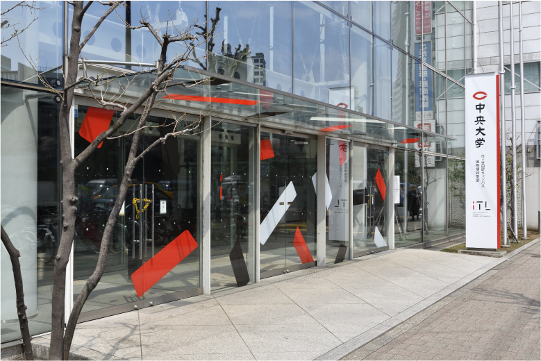

iTLとは
IT×法律×グローバル教養
- iTLの目標
- カリキュラムの特徴
- 学部の魅力など
iTLでは『「情報の仕組み」と「情報の法学」の融合という新たな発想から解決策を実装する』事を目的として 情報・法律・国際教養を学び、国際社会で活躍できる人材の育成に力を入れています。
情報・法律・グローバル教養のどの分野においても、文系・初学者にもわかりやすく基礎から学ぶことができます。 さらに、理系や専門性を高めたい学生のニーズにも応えられるよう高度な科目も設置されているため、幅広く学生の可能性を高めることができます。
新設の洗練されたキャンパスデザインと、学生の自由な発想を応援してくれる充実した学習サポートは勿論、 新宿区に構えるiTLは様々な場所へのスムーズなアクセスを実現します。
♢公式VRキャンパスは こちらから♢
iTLについて詳しく知りたい方は☻ 公式HPへ
事前受付
～現役のiTL生にあなたの悩みや疑問を相談してみませんか？～
- オンライン相談の概要
- 申込方法
iTLの受験を考えている方やiTLについて詳しく知りたい学生向けに、 オンライン相談会を開催します。
期間：10月15日(金)～10月30日(月)23:59
開催：10月31日(日)10時～17時、各回：15分～30分
申込：下記LINEの友だち追加ボタンを押し、必要事項をチャットに送信
※後日、委員会より当日のZoomのリンクを、お送りします。

飛び入り
参加
iTLFest.当日の10月31日10時～17時にこのページを見られた方や、参加をまだ迷っている方...ご安心ください！
こちらには当日の飛び入り参加専用の「iTLのお部屋」もご用意があります！
【iTLのお部屋】
期間：10月31日(日)10時～12時/13時～17時
形式：カメラオフ可
必要なもの：iTL生に質問してみたいというお気持ち
※ごく稀に、参加者が複数になるかもしれませんがご了承ください。
前日にこちらのページにZoomへのリンクをご用意します。